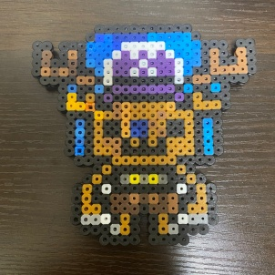
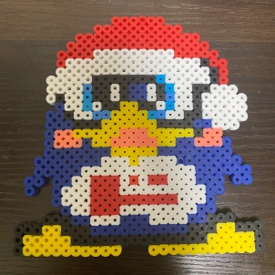

自己紹介
初めまして、この度個人VライバーとしてIRIAMで活動予定の
「春ノそよ風」と申します！
この名前の由来として、春のような暖かい居場所作り。
1人でも多くの方の「夢」をそよ風で後押しできるような
そんなVライバーとしての活動をしていきたいと思います!
そよ風の病歴
| 年月 | 病気名 | 入院歴 | 状態名 |
|---|---|---|---|
| 2023年2月22日 | 統合失調症発症 | 医療保護入院 | |
| 2023年12月13日 | 統合失調症（再発） | 緊急措置入院 | 精神運動興奮状態 |
| 2023年12月14日 | 統合失調症 | 措置入院 | 精神運動興奮状態 |
| 2024年1月31日 | 妄想型統合失調症 | 医療保護入院 | 幻覚妄想状態 |
| 2024年2月21日 | 妄想型統合失調症 | 任意入院 | 退院 |
デイケア作品
ぼく、そよ風は通所リハビリテーションのプログラムで作ったものを
この公式サイトを通じて載せていこうと思います。
- 
- 
各種SNS
-
こちらから